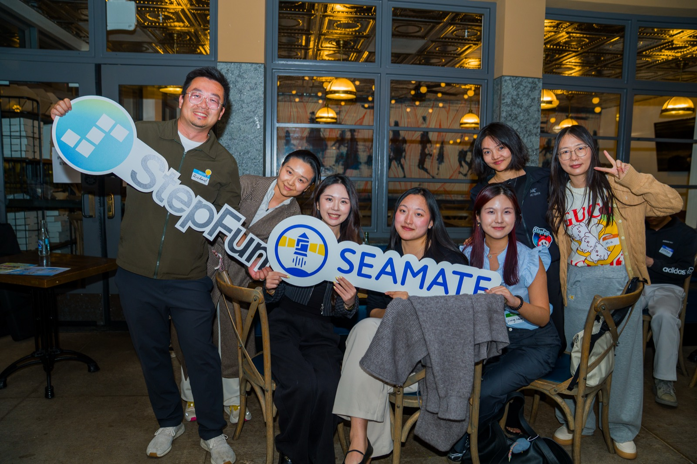
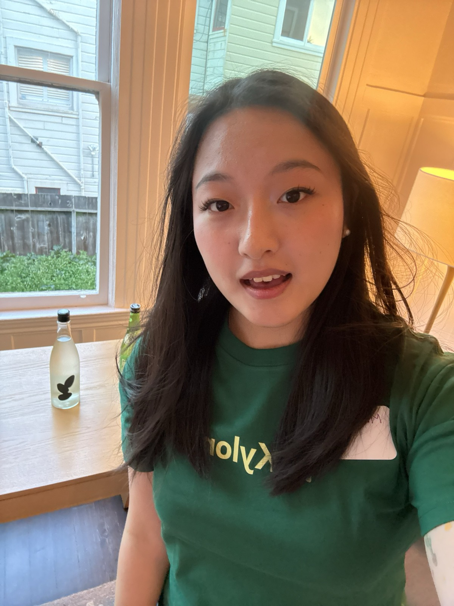
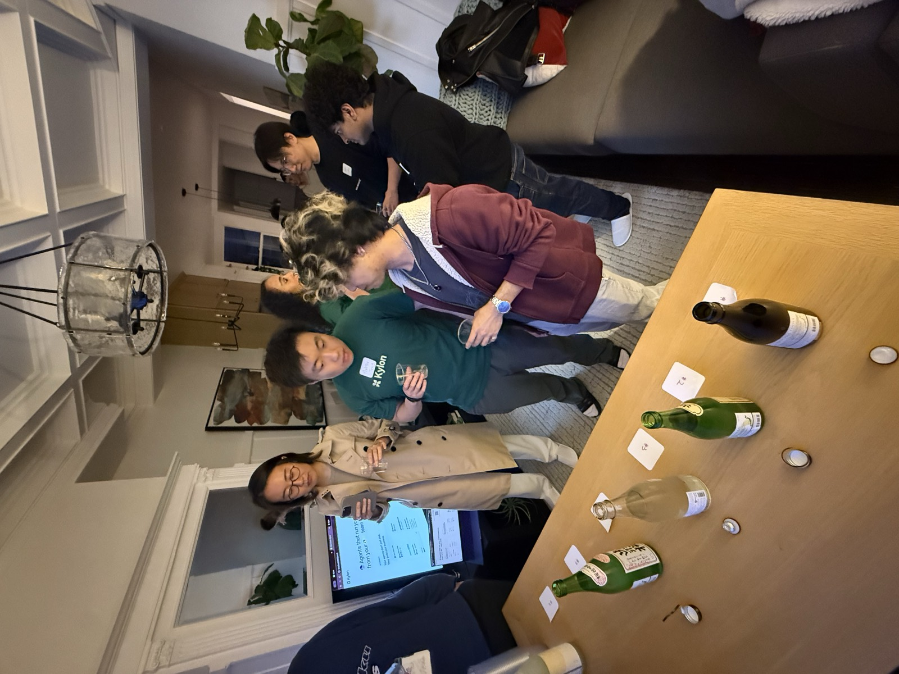
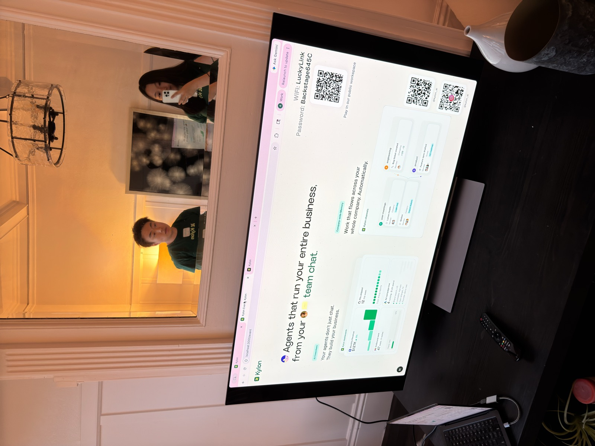
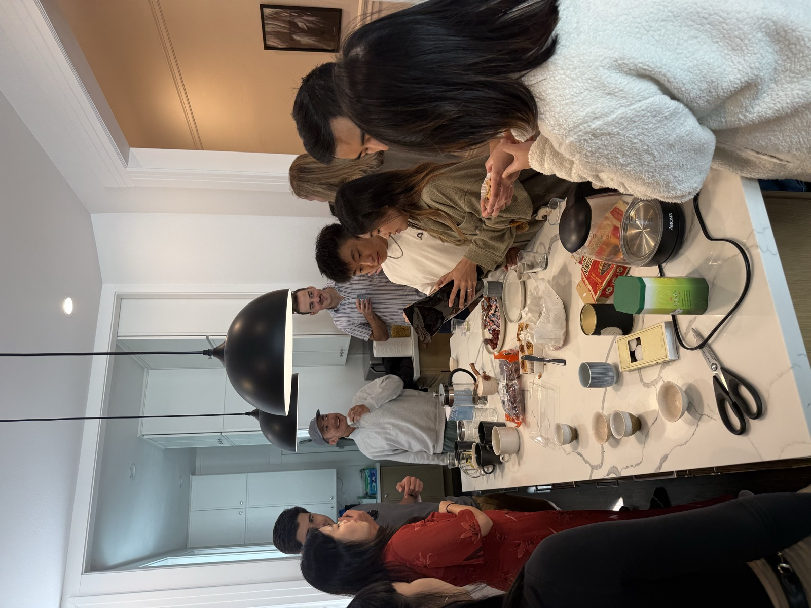
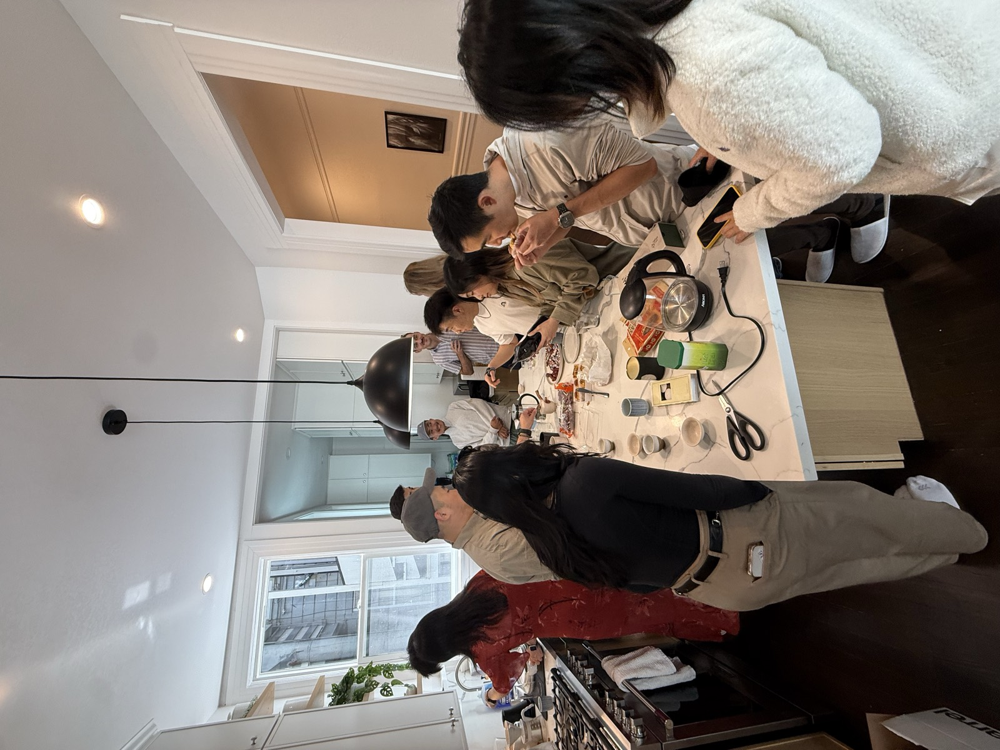
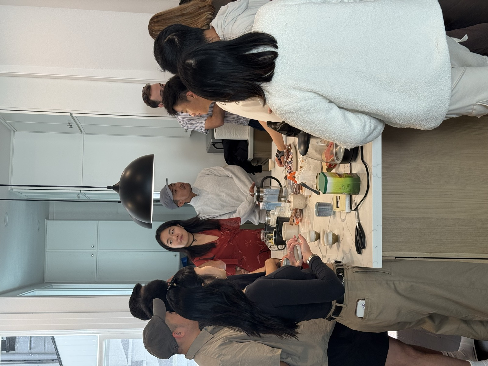

Product Manager Intern
San Francisco, CA
Apr 2026 – Present

Data Analyst Intern
RBC Royal Bank of Canada
Toronto, Canada
Jan – Aug 2025

Data Analyst Intern
Xiaohongshu (RedNote)
Shanghai, China
Jul – Sep 2024

Business Analyst Intern
Microsoft
Beijing, China
May – Sep 2023
Startup Event Host & MC
Seamate · Mito Health · Coral.io · Kylon


San Francisco, CA
Feb 2026 – Present

SaaStr Week Founder Mixer 🍕🍺Step Out. StepFun In. ↗ luma.com/4cqlswgf
An informal evening mixer built around SaaStr Week, trading panels and slide decks for pizza, drinks, and actual conversation. The night opened with a short intro from StepFun, moved into a 25-minute open mic where anyone could stand up and share what they were building and who they wanted to meet, then dissolved into free-form networking. 249 people registered, making it a mid-size gathering that still felt personal — big enough for serendipity, small enough that no one got lost in the room. The crowd was AI-native product builders, SaaS founders adding AI to their stack, operators scaling those products, and investors tracking the application layer. The goal was simple: give founders in town for SaaStr a low-pressure room where introductions happen on their own.




AI Native Developers Meetup @ Google I/O Week ↗ luma.com/ai-native-developers-io-week
The largest event of the series — a panel night for founders, developers, and builders working on AI-native products, agents, and multimodal tools, timed to Google I/O week. 918 people registered and roughly 500 attended, with speakers from Google, StepFun, Genspark, Comfy, and a range of AI-native startups covering agents, AI-assisted development, multimodal creation, AI video, monetization, and production infrastructure. The audience skewed toward developers already in town for I/O, alongside AI-native founders, app and agent builders, AIGC creators, and investors watching the space. Part of Seamate's “Front Row Series,” the event was designed as a high-signal gathering during a week when the entire ecosystem is in one place.


Sake Night with Kylon ↗ luma.com/74s6v040
A two-night pre-launch celebration for Kylon, an AI platform that brings agents directly into workplace messaging. Each night walked guests through a tasting of four to five premium sakes across different styles, punctuated by surprise interactive moments and time with the Kylon team. Deliberately intimate — around 28 guests per night in a private San Francisco apartment, capped so that everyone in the room could actually meet everyone else. The invite list was curated rather than open: founders, operators, and early users who would care about what Kylon was building. Less a launch party than a way to put the product in front of a small, high-context room before it went public.






Tea Tasting Founder Meetup
The quietest event of the series, and the one that needed the least explanation. A small group of founders around a single table, working through a slow sequence of teas — no name tags, no pitch round, no open mic. The format borrowed its pacing from the tea itself: steep, taste, talk, repeat. Conversations ran long and went somewhere real, mostly toward the parts of building a company that don't make it into a demo day slide. Invitation only and intentionally tiny, kept to the size where a single conversation can hold the whole room. No landing page, no ticket link — just a room, a kettle, and people who needed a few hours off the record.

